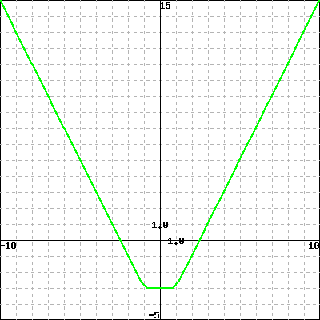

Chapter 23 16-properties-of-functions
Exercises Exercises
Consider the function whose graph is sketched:

Find the open intervals over which the function is increasing or decreasing.
Write the answers in interval notation 1 .
The open \(x-\)intervals over which the function is increasing:
The open \(x-\)intervals over which the function is decreasing:
Function has local maximum at \(x=\)
Function has local minimum at \(x=\)
Note: if there are no such points, enter none
2. local/uw-stout/math120-sulvn-3-3/problem32.pg.
Consider the function shown in the following graph.

Find open \(x-\)intervals where the function is decreasing:
Find open \(x-\)intervals where the function is increasing:
Note: use interval notation 2 to enter your answer.
Function has local maximum at \(x=\)
Function has local minimum at \(x=\)
Note: if there are no such points, enter none
3. local/uw-stout/math120-sulvn-3-3/problem33.pg.
Consider the function whose graph is sketched:

Find the open intervals over which the function is increasing or decreasing.
Write the answers in interval notation 3 .
The open \(x-\)intervals over which the function is increasing:
The open \(x-\)intervals over which the function is decreasing:
4. local/uw-stout/math120-sulvn-3-3/sulvn-3-3-even-odd-problem-1.pg.
Determine algebraically whether each functions is even, odd, or neither
- Function \(\displaystyle f(x) = -8x^{4}+6x^{2}+4\) is ...
- Function \(\displaystyle f(x) = -9x^{2}+4x\) is ...
- Function \(\displaystyle f(x) = 5x^{2}\) is ...
- Function \(\displaystyle f(x) = 4x^{3}\) is ...
5. local/Library/Utah/College_Algebra/set5_Functions_and_Their_Graphs/1050s5p28.pg.
6. local/Library/Utah/College_Algebra/set5_Functions_and_Their_Graphs/1050s5p32.pg.
Use E for Even and O for Odd and N for Neither Let
\begin{equation*}
h=f\times g,
\end{equation*}
i.e., \(h\) is the product of \(f\) and \(g\text{.}\) Then
\(h\) is if \(f\) and \(g\) are both even,
\(h\) is if \(f\) is even and \(g\) is odd, and
\(h\) is if \(f\) and \(g\) are both odd.
7. local/Library/Utah/Trigonometry/set3_Algebra/s3p16.pg.
A function \(f\) is even if it satisfies \(f(x) = f(-x)\) for all \(x\) in its domain. An example of an even function is \(f(x) =
x^2\) since \((x^2) = (-x)^2\text{.}\)
\(f\) is odd if it satisfies \(f(x) = -f(-x)\) for all \(x\) in its domain. An example of an odd function is \(f(x) = x^3\) since \(x^3 = -(-x)^3.\)
Functions may be neither even nor odd, for example the function \(f(x) = x^2+x^3\) is in that category.
For each function below enter the letter E if the function is even, the letter O (not the digit \(0\text{!}\)) if it's odd, and the letter N if it's neither even nor odd.
\(f(x) = x^4.\)
\(f(x) = x^5.\)
\(f(x) = x^4 + x^5.\)
8. local/Library/Utah/Business_Algebra/set5_Quadratic_and_Other_Special_Functions/p23.pg.
Below, enter x if the graph of the given equation is symmetric with respect to the \(x\)-axis, \(y\) if it is symmetric with respect to the \(y\) axis, o (lower case O) if it is symmetric with respect to the origin, and n (for None) if it has none of these three symmetries.
\(y=x^3+x\)
\(y=(x^3+1)^2\)
\(y=\frac{1}{1+x^2}\)
\(y=\frac{x}{1+x^2}\text{.}\)
/webwork2_files/helpFiles/IntervalNotation.html/webwork2_files/helpFiles/IntervalNotation.html/webwork2_files/helpFiles/IntervalNotation.html